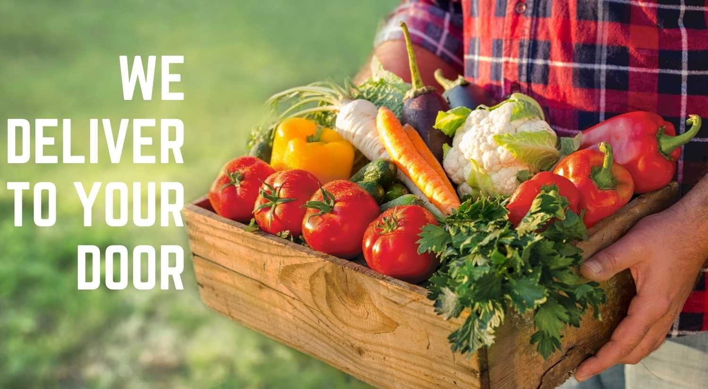

Welcome to TarkariGhar
Welcome to our bountiful selection of premium, organic vegetables! Our commitment to delivering the freshest and healthiest products directly from farm.We believe in providing you with vegetables that are not only "delicious", but also nourishing for your body.